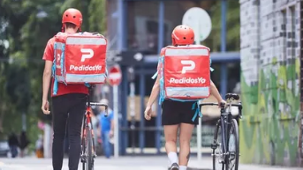

Rutina
Algunos locales aparecen como parte de una costumbre más que como eventos aislados, y terminan funcionando como marcas estables dentro del consumo.
 ECD · 2025 · Visualización de datos personales
ECD · 2025 · Visualización de datos personales
Una exploración visual de 70 pedidos registrados en PedidosYa. Gasto, repetición, horarios y consumo cotidiano contados a partir de datos propios.

Este trabajo parte de una idea simple: mis pedidos no son solo compras. También son un registro de hábitos, horarios, repeticiones y formas de resolver el hambre. A partir de ese historial, el análisis organiza el consumo en distintas lógicas —abastecimiento, comida resuelta, antojo y merienda— para leer una parte de mi vida cotidiana a través de los datos.
La frecuencia permite distinguir entre pedidos excepcionales y lugares que ya forman parte de una rutina. Esta primera visualización identifica cuáles son los comercios que más se repiten y qué tan concentrado está mi consumo en unos pocos locales.
La frecuencia no siempre coincide con el peso económico. Este gráfico compara el gasto total por categoría o tipo de consumo para mostrar qué dimensión pesa más en términos monetarios dentro del historial.
No solo importa qué pido, sino también cuándo y desde dónde. Esta visualización pone en relación categorías, locales y franjas horarias para hacer visibles conexiones entre hábito, comercio y momento del día.
La dimensión temporal permite leer el historial como una secuencia. Esta visualización organiza los pedidos por día de la semana y franja horaria para detectar ritmos de consumo, compras funcionales y momentos de capricho.
Algunos locales aparecen como parte de una costumbre más que como eventos aislados, y terminan funcionando como marcas estables dentro del consumo.
Los pedidos de abastecimiento no siempre son los más frecuentes, pero sí pueden concentrar una parte importante del dinero gastado.
Los horarios permiten distinguir consumos funcionales de antojos o compras repetidas, mostrando que el consumo también tiene ritmo.
Mis pedidos no muestran solo qué comí o compré: muestran cómo se organiza una parte de mi vida cotidiana a través del hábito, el deseo y la practicidad.